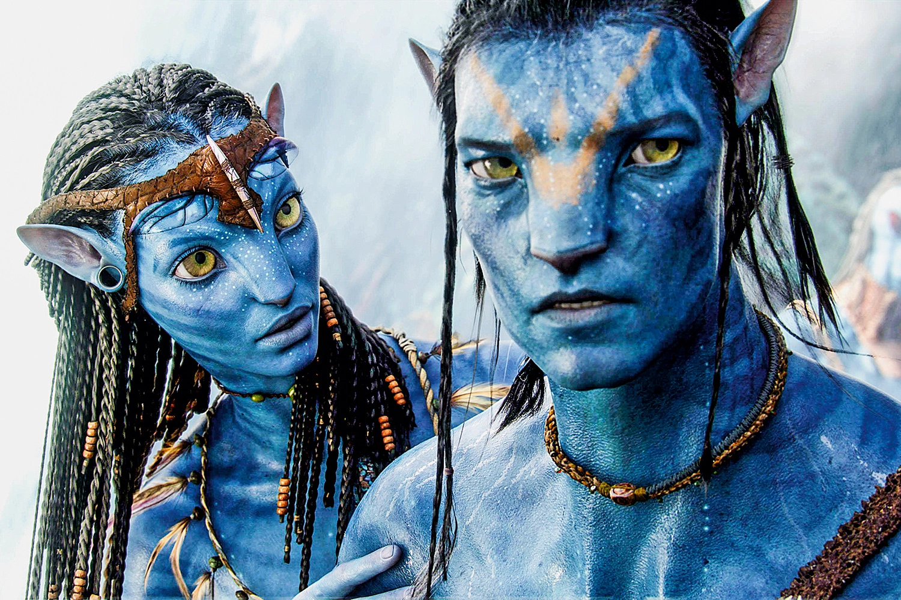

Avatar

Avatar é um filme épico de ficção científica estadunidense de 2009, escrito e dirigido por James Cameron, e estrelado por Sam Worthington, Zoë Saldaña, Michelle Rodriguez, Sigourney Weaver e Stephen Lang. O filme, que foi produzido pela Lightstorm Entertainment e distribuído pela 20th Century Fox, tem seu enredo localizado no ano 2154 e é baseado em um conflito em Pandora, uma das luas de Polifemo, um dos três planetas gasosos fictícios que orbitam o sistema Alpha Centauri. Em Pandora, os colonizadores humanos e os Na'vi, nativos humanoides, entram em guerra pelos recursos do planeta e pela continuação da existência da espécie nativa. O título do filme refere-se aos corpos Na'vi-humanos híbridos, criados por um grupo de cientistas através de engenharia genética, para interagir com os nativos de Pandora.
Elenco e personagens
Sam Worthington
- Interpreta Jake Sully, um ex-fuzileiro naval confinado a uma cadeira de rodas. Ele foi selecionado para o programa Avatar em substituição ao seu irmão gêmeo morto por terem genoma idêntico e, consequentemente, compatibilidade com o Avatar já produzido para o irmão. O Avatar de Jake é levado por Neytiri ao seu clã Na'vi, onde ele lentamente aprende sua língua e seus costumes.
Sigourney Weaver
- Como Dra. Grace Augustine, uma experiente botânica que vive em Pandora há 15 anos e dirige o projeto Avatar. Ao longo dos anos em que trabalhou em Pandora, ela catalogou a flora do planeta, aprendeu a língua dos nativos e os ensinou inglês.
Michelle Rodriguez
- Desempenha o papel de Trudy Chacon, uma piloto da marinha americana.
Giovanni Ribisi
- Como Parker Selfridge, administrador da estação em Pandora.
Navi
Zoë Saldaña
- Zoë Saldaña como Neytiri, a princesa do clã Omaticaya. Neytiri é a responsável por levar Jake ao seu clã e ensiná-lo seus costumes.
CCH Pounder
- CCH Pounder como Mo'at, rainha do clã e sua Tsahik, líder espiritual. Mãe de Neytiri.
Laz Alonso
- Laz Alonso como Tsu'Tey, um dos mais bravos guerreiros Na'vi e noivo prometido de Neytiri.
Wes Studi
- Wes Studi como Eytucan, o Olo'eyktan, líder guerreiro do clã Omaticaya, marido de Mo'at e pai de Neytiri.
Filmes
Avatar | I
No exuberante mundo alienígena de Pandora vivem os Na'vi, seres que parecem ser primitivos, mas são altamente evoluídos. Como o ambiente do planeta é tóxico, foram criados os avatares, corpos biológicos controlados pela mente humana que se movimentam livremente em Pandora. Jake Sully, um ex-fuzileiro naval paralítico, volta a andar através de um avatar e se apaixona por uma Na'vi. Esta paixão leva Jake a lutar pela sobrevivência de Pandora.
Avatar: The Way of Water | II
Avatar: The Way of Water é um futuro filme épico de ficção científica americano co-escrito, co-editado, co-produzido e dirigido por James Cameron, e produzido pela 20th Century Studios, com sua data de lançamento prevista para 16 de dezembro de 2022.
Avatar: The Seed Bearer | III
O Portador de Sementes é um filme épico de ficção científica e aventura estadunidense, dirigido, produzido, editado e co-escrito por James Cameron, com previsão para ser lançado em 20 de dezembro de 2024.